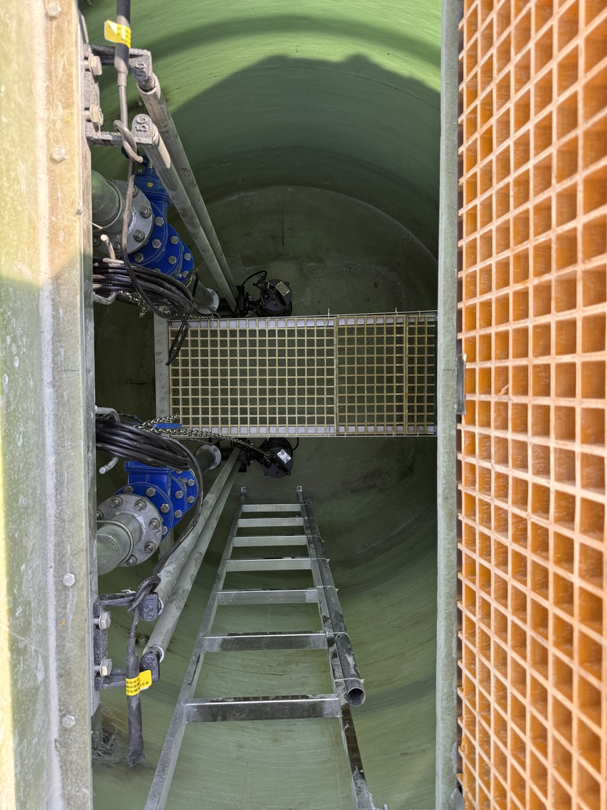
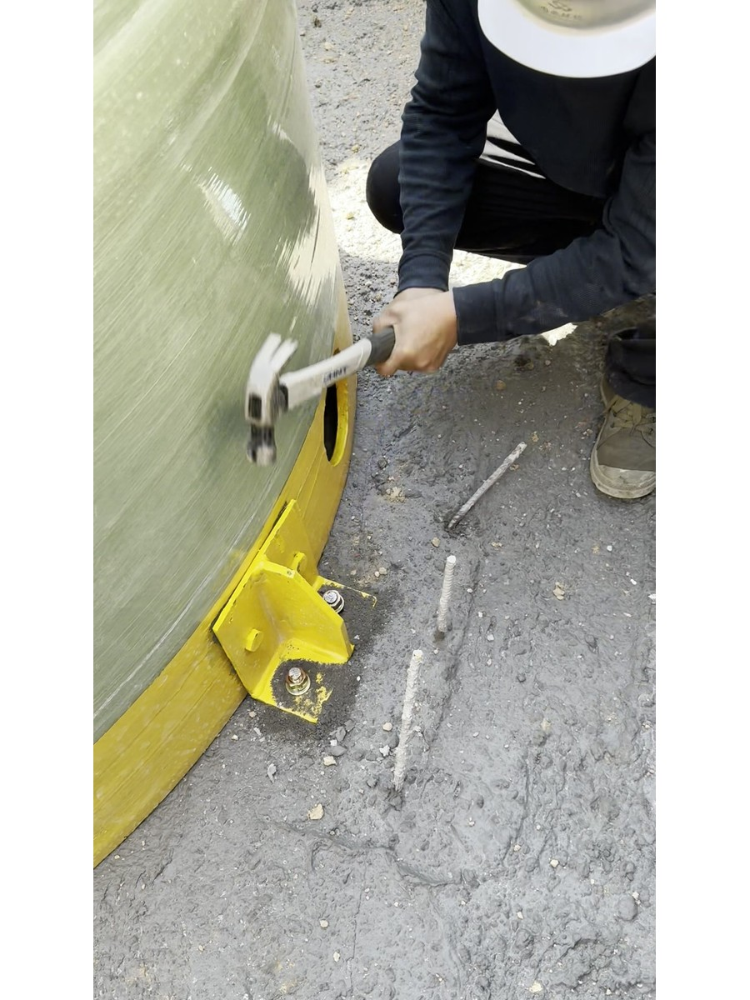
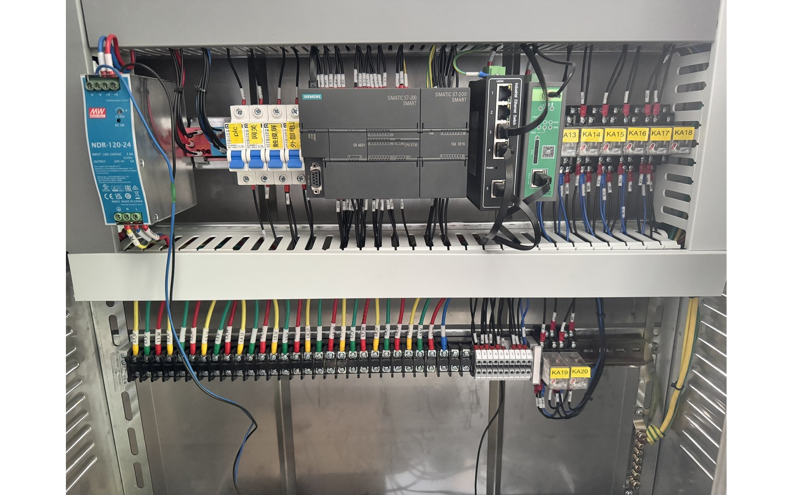
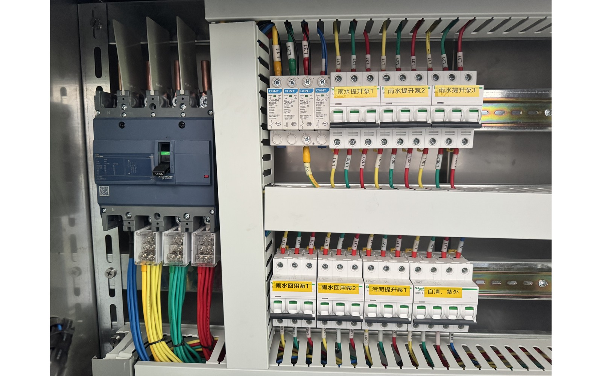

GUWEIENVIRONMENTAL
GUWEIENVIRONMENTALPrefabricated Pumping Stations
Main Equipment
Solutions / Urban Drainage & Wastewater Lifting
Pumping station structures, equipment and controls, with installation and configuration reviewed against flow, head and site conditions.
01 / Project Overview
From the pumping chamber to electrical controls: equipment structures, installation positions and wiring details.


Main Equipment
Design Flow & Head
Pump Quantity & Power
The chamber is lifted into the excavation and secured at its base. Internal pipework, a ladder and a maintenance platform provide the equipment layout and access.
Equipment models, chamber dimensions and Guwei's service scope: 待确认.
02 / Processes & Systems
The top access opening provides a view of the internal pipes, ladder and platform.
Pipework runs inside the chamber and connects to the equipment interfaces.
Maintenance access and internal working space.
Access opening, covers and ventilation pipe arrangement.
03 / Project Equipment
Equipment and configuration photographs. Select an image to enlarge.



04 / Site Implementation
Photographs of equipment delivery, chamber lifting and base fixing.


05 / Supporting Equipment
Control components, terminal wiring and distribution circuit labels in the project's electrical panel.


Control components, terminals and trunking are grouped together, with wiring matched to circuit numbers.
Branch switches and function labels identify the corresponding equipment circuits.
1. Whether the project handles stormwater drainage or wastewater lifting, and the area served.
2. Known flow, head and site conditions, and whether this is a new installation or retrofit.
3. The issue you most want to resolve.
You can start with the information you have, even without complete drawings or technical documents.
Share the project type, capacity and contact details so we can discuss your technical requirements.
Online enquiries are not currently available. Please contact us by phone. +86 18026396076